Syed Owais
See more →
I build digital products from scratch — taking them from initial design systems and interaction models all the way through to full-stack code execution. I don't just mock up concepts; I build the tools, APIs, and servers required to make them work.
I believe the best digital experiences balance visual intent with underlying engineering. Whether I'm building high-gloss web applications, crafting custom case studies, or self-hosting services on my servers, I'm driven by a deep curiosity for how things work under the hood.